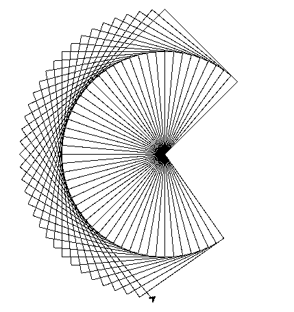
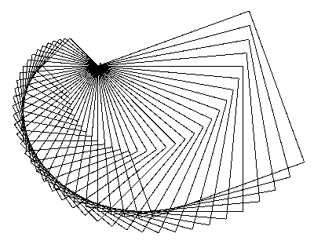
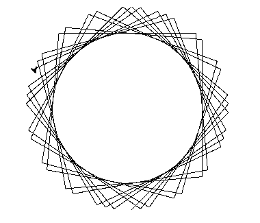
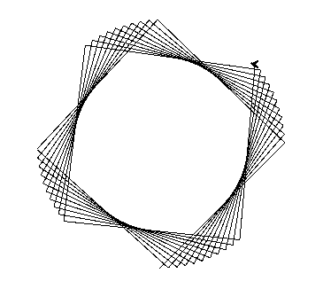

4.8 EXERCICIS AMB LA LLIBRERIA GRÀFICA WINDOW ADD-ON
Exercici 1
Espiral quadrada. Escriu un programa que dibuixi una espiral quadrada des del centre de la pantalla. El programa ha de deixar de dibuixar l’espiral un cop aquesta sobresurti de la pantalla. No cal que es freni just abans de sortir de la finestra, simplement quan un costat dibuixat intersequi els marcs d'aquesta, es para de dibuixar. L’últim costat dibuixat pot sobresortir. Pista: useu tortugues. Els moviments relatius són més simples amb aquestes, però no estàs obligat a usar-les.
Exercici 2
Quadrats concèntrics. Escriu un programa que donada la mida d'un quadrat inicial, i un nombre màxim de quadrats, vagi dibuixant quadrats concèntrics reduint a cada pas la mida del costat del quadrat en 10 unitats (píxels). Fica un límit de manera que no es dibuixin quadrats amb menys de 5 unitats de costat.
Exercici 3
Ventall de quadrats. Escriu un programa que dibuixi a la finestra un ventall de quadrats, és a dir, una successió de quadrats desfasats un cert angle entre ells que comparteixen el mateix vèrtex d'origen. T’hauria de quedar quelcom semblant al dibuix de la figura següent:

Exercici 4
Espiral de quadrats. Escriu un programa que dibuixi a la finestra una espiral de quadrats, és a dir, una successió de quadrats desfasats un cert angle entre ells que comparteixen el mateix vèrtex d'origen i que a més la mida del costat es va incrementant a cada pas. Mireu la il·lustració per a obtenir una referència visual del que s'espera del programa. Pista: feu primer l’exercici 3, la solució és similar.

Exercici 5
Quadrats concèntrics deformats. Escriu un programa que donat l'angle de les cantonades d'un “quadrat”, dibuixi a la finestra un seguit de quadrats concèntrics, és a dir, una successió de quadrats desfasats un cert angle entre ells que comparteixen el centre, però aquest cop es demana que l'angle del les cantonades dels quadrats no formi 90 graus. Aquí teniu un parell d'exemples de com us hauria de quedar si feu que l’angle sigui de 85 i 91 graus respectivament. Pista: que l'enunciat no us enganyi, us serà més d'ajuda haver fet l'exercici 3 que no el 2.


Exercici 6
Polígons regulars. Escriu un programa que donat el nombre de costats i el radi de la circumferència que circumscriu aquest polígon, el dibuixi per pantalla. Si no us en sortiu amb el radi, proveu a dibuixar el polígon amb una mida de costat directament donada.
Exercici 7
Interacció amb la finestra. Modifica el codi d'exemple per a fer que una tortuga es mogui per la pantalla usant les fletxes del teclat. Podeu afegir totes les funcionalitats que desitgeu. Us pot ser molt útil executar primer el codi d'exemple per entendre el funcionament d'aquest.